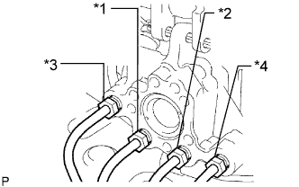

HYDRAULIC BRAKE BOOSTER > INSTALLATION |
| 1. INSTALL BRAKE BOOSTER GASKET |
Install a new brake booster gasket to the hydraulic brake booster.
| 2. INSTALL HYDRAULIC BRAKE BOOSTER ASSEMBLY |
Install the hydraulic brake booster assembly with the 4 nuts.
Connect the clamp to the body with the bolt.
Connect the brake tube to the clamp.
Connect the 3 brake tubes to the clamp.
|  |
Connect the 4 brake lines to the correct positions of the hydraulic brake booster assembly as shown in the illustration.
Using a union nut wrench, connect the 4 brake lines to the hydraulic brake booster assembly.
Install the wiring harness bracket with the bolt.
Attach the VSC connector to the wire harness clamp bracket.
Attach the clamp.
Connect the 3 connectors to the hydraulic brake booster.
| 3. INSTALL AIR INJECTION CONTROL DRIVER WITH BRACKET |
Install the air injection control driver with bracket with the bolt.
Connect the 2 air injection control driver connectors.
| 4. INSTALL CANISTER |
Install the canister to the bracket.
Connect the air inlet line hose to the canister.
Connect the vent line hose to the canister.
Connect the purge line hose to the canister.
| 5. INSTALL FUEL FILTER ASSEMBLY |
Install the fuel filter assembly (Click here).
| 6. INSTALL PUSH ROD PIN |
Apply a light coat of lithium soap base glycol grease to the inner surface of the hole in the brake pedal.
 | Lithium soap base glycol grease |
 |
Set the master cylinder push rod clevis in place, insert the push rod pin from the left side of the vehicle, and then install a new clip.
| 7. INSTALL LOWER NO. 1 INSTRUMENT PANEL AIRBAG ASSEMBLY |
Install the lower No. 1 instrument panel airbag assembly (Click here).
| 8. INSTALL ENGINE ROOM SIDE COVER LH |
Install the engine room side cover LH with the 4 clips.
| 9. CONNECT CABLE TO NEGATIVE BATTERY TERMINAL |
| 10. BLEED BRAKE SYSTEM |
Turn the engine switch on (IG).
Remove the brake master cylinder reservoir filler cap assembly.
Add brake fluid until the fluid level is between the MIN and MAX lines of the reservoir.
Repeatedly depress the brake pedal and bleed air from the bleeder plug of the front disc brake cylinder RH.
Repeat the step above until the air is completely bled, and then tighten the bleeder plug while depressing the brake pedal.
Bleed the air from the bleeder plug of the front disc brake cylinder LH using the same procedure as for the RH side.
With the brake pedal depressed, loosen the bleeder plug of the rear disc brake cylinder RH, continue to hold the brake pedal and allow brake fluid to be drained from the bleeder plug while the pump motor operates.
When there is no more air in the brake fluid, tighten the bleeder plug, and then release the brake pedal.
Bleed the air from the bleeder plug of the rear disc brake cylinder LH using the same procedure as for the RH side.
Turn the engine switch off and connect the intelligent tester to the DLC3.
Turn the engine switch on (IG).
Turn the intelligent tester on.
Enter the following menus: Chassis / ABS/VSC/TRC / Utility / Air Bleeding.
Repeatedly depress the brake pedal several times, and then, with the brake pedal depressed, turn FR Line on and bleed air.
Turn FL Line on and bleed air using the same procedures as for FR Line.
Turn RR Line on, loosen the bleeder plug of the rear disc brake cylinder RH and drain brake fluid.
Repeat the step above until the air is completely bled, and then tighten the bleeder plug.
Turn RL Line on and bleed air from the bleeder plug of the rear disc brake cylinder LH using the same procedure as for the RH side.
Turn the intelligent tester off and turn the engine switch off.
Inspect for brake fluid leaks.
Check and adjust the brake fluid level (Click here).
Clear the DTCs (Click here).
| 11. CHECK AND ADJUST BRAKE PEDAL |
Check and adjust brake pedal (Click here).
| 12. INSPECT BRAKE MASTER CYLINDER OPERATION |
Inspect the brake master cylinder operation (Click here).
| 13. PERFORM YAW RATE AND ACCELERATION SENSOR ZERO POINT CALIBRATION |
Perform yaw rate and acceleration sensor zero point calibration (Click here).